ENGINE UNIT > DISASSEMBLY |
| 1. REMOVE OIL PRESSURE SENSOR |
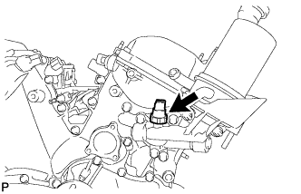 |
Using a 24 mm deep socket wrench, remove the oil pressure sensor.
| 2. REMOVE ENGINE COOLANT TEMPERATURE SENSOR |
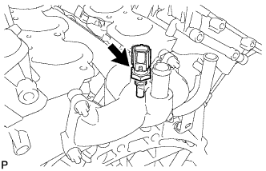 |
Remove the engine coolant temperature sensor and gasket.
| 3. REMOVE CYLINDER BLOCK WATER DRAIN COCK SUB-ASSEMBLY |
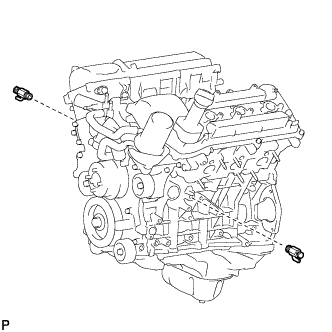 |
Remove the 2 water drain cocks.
| 4. REMOVE VVT SENSOR |
 |
Remove the 2 bolts and 2 VVT sensors from the cylinder head LH and RH.
| 5. REMOVE CRANKSHAFT POSITION SENSOR |
 |
Remove the bolt and crankshaft position sensor.
| 6. REMOVE CAMSHAFT TIMING OIL CONTROL VALVE ASSEMBLY RH |
 |
Remove the bolt and camshaft timing oil control valve from the cylinder head.
Remove the O-ring.
| 7. REMOVE CAMSHAFT TIMING OIL CONTROL VALVE ASSEMBLY LH |
Remove the bolt and camshaft timing oil control valve from the cylinder head.
Remove the O-ring.
| 8. REMOVE OIL CONTROL VALVE FILTER |
 |
Remove the 2 unions, 2 filters and 2 gaskets from the cylinder head LH and RH.
| 9. REMOVE OIL FILTER SUB-ASSEMBLY |
Remove the drain pipe cap.
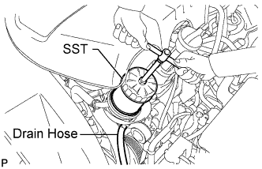 |
Using SST, remove the oil filter.
| 10. REMOVE OIL COOLER ASSEMBLY |
 |
Remove the oil cooler hose and No. 2 oil cooler hose.
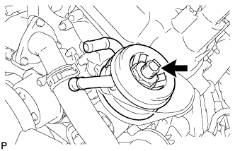 |
Remove the union bolt, plate washer and oil cooler.
Remove the O-ring from the oil cooler.
| 11. REMOVE OIL FILTER BRACKET SUB-ASSEMBLY |
 |
Remove the 3 bolts, 2 nuts, oil filter bracket and O-ring.
| 12. DISCONNECT NO. 1 WATER BY-PASS HOSE |
| 13. DISCONNECT NO. 2 WATER BY-PASS HOSE |
| 14. DISCONNECT NO. 3 WATER BY-PASS HOSE |
| 15. REMOVE WATER INLET HOUSING |
 |
Remove the 5 bolts and water inlet housing.
Remove the O-ring and gasket from the water outlet pipe and water pump.
| 16. REMOVE REAR WATER BY-PASS JOINT |
 |
Remove the 2 bolts, 4 nuts, rear water by-pass joint and 2 gaskets.
Remove the O-ring from the No. 1 water outlet pipe.
| 17. REMOVE OIL FILLER CAP SUB-ASSEMBLY |
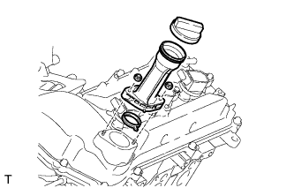 |
| 18. REMOVE OIL FILLER CAP HOUSING |
Remove the 2 nuts, oil filler cap housing and gasket.
| 19. REMOVE SPARK PLUG |
Remove the 6 spark plugs.
| 20. REMOVE CYLINDER HEAD COVER SUB-ASSEMBLY RH |
 |
Remove the 10 bolts, 3 seal washers, 2 nuts, cylinder head cover and gasket.
| 21. REMOVE VENTILATION VALVE SUB-ASSEMBLY |
Remove the ventilation valve.
| 22. REMOVE CYLINDER HEAD COVER SUB-ASSEMBLY LH |
 |
Remove the 10 bolts, 3 seal washers, 2 nuts, cylinder head cover and gasket.
| 23. REMOVE CRANKSHAFT PULLEY |
 |
Turn the crankshaft pulley, and align the notch with the timing mark "0" of the timing chain cover.
 |
Check that the timing marks of the camshaft timing gears and sprockets are aligned with the timing marks of the bearing caps as shown in the illustration.
 |
Using SST, hold the crankshaft pulley and loosen the pulley set bolt.
 |
Using the pulley set bolt and SST, remove the crankshaft pulley.
| 24. REMOVE OIL PAN DRAIN PLUG |
Remove the drain plug and gasket.
| 25. REMOVE NO. 2 OIL PAN SUB-ASSEMBLY |
 |
Remove the 10 bolts and 2 nuts.
 |
Insert the blade of an oil pan seal cutter between the oil pans. Cut through the applied sealer and remove the No. 2 oil pan.
| 26. REMOVE OIL STRAINER SUB-ASSEMBLY |
 |
Remove the 2 nuts, oil strainer and gasket.
| 27. REMOVE OIL PAN SUB-ASSEMBLY |
 |
Remove the 17 bolts (A, B, C) and 2 nuts.
 |
Using a screwdriver, remove the oil pan by prying between the oil pan and cylinder block as shown in the illustration.
 |
Remove the O-ring from the timing chain cover.
Remove the 4 stud bolts from the oil pan.
| 28. REMOVE ENGINE REAR OIL SEAL RETAINER |
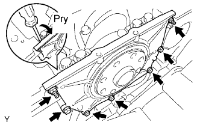 |
Remove the 5 bolts and 2 nuts.
Using a screwdriver, remove the oil seal retainer by prying between the oil seal retainer and crankshaft bearing cap.
| 29. REMOVE REAR CRANKSHAFT OIL SEAL |
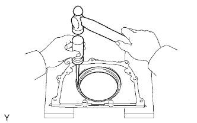 |
Using a screwdriver and hammer, tap out the oil seal.
| 30. REMOVE TIMING CHAIN COVER SUB-ASSEMBLY |
 |
Remove the 24 bolts labeled A and B, and the 2 nuts.
 |
Remove the timing chain cover by prying between the timing chain cover and cylinder head or cylinder block with a screwdriver.
Remove the O-ring from the cylinder head LH side.
| 31. REMOVE WATER PUMP ASSEMBLY |
 |
Remove the 8 bolts, water pump and gasket.
| 32. REMOVE FRONT CRANKSHAFT OIL SEAL |
If the timing chain case is removed:
Using a screwdriver and wooden block, pry out the oil seal.
| 33. REMOVE NO. 1 CHAIN TENSIONER ASSEMBLY |
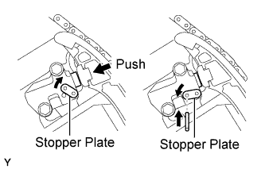 |
While turning the stopper plate of the tensioner clockwise, push in the plunger of the chain tensioner as shown in the illustration.
While turning the stopper plate of the tensioner counterclockwise, insert a bar of φ3.5 mm (0.138 in.) into the holes on the stopper plate and tensioner to fix the stopper plate in place.
Remove the 2 bolts and chain tensioner.
| 34. REMOVE CHAIN TENSIONER SLIPPER |
Remove the chain tensioner slipper.
| 35. REMOVE NO. 1 IDLE GEAR SHAFT |
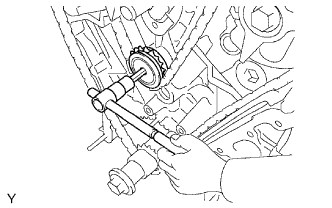 |
Using a 10 mm hexagon wrench, remove the No. 2 idle gear shaft, No. 1 idle gear and No. 1 idle gear shaft.
| 36. REMOVE NO. 2 CHAIN VIBRATION DAMPER |
 |
Remove the 2 No. 2 chain vibration dampers.
| 37. REMOVE NO. 1 CHAIN SUB-ASSEMBLY |
Remove the No. 1 chain.
| 38. REMOVE CRANKSHAFT TIMING SPROCKET |
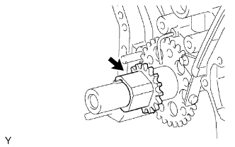 |
Remove the crankshaft timing sprocket.
| 39. REMOVE NO. 1 CHAIN VIBRATION DAMPER |
 |
Remove the 2 bolts and No. 1 chain vibration damper.
| 40. REMOVE CAMSHAFT TIMING GEARS AND NO. 2 CHAIN (for Bank 1) |
 |
While raising the No. 2 chain tensioner, insert a pin of φ1.0 mm (0.0394 in.) into the hole to fix the tensioner in place.
 |
Hold the hexagonal portion of the camshaft with a wrench, and remove the 2 bolts, camshaft timing gear, camshaft timing sprocket and No. 2 chain.
| 41. REMOVE NO. 2 CHAIN TENSIONER ASSEMBLY |
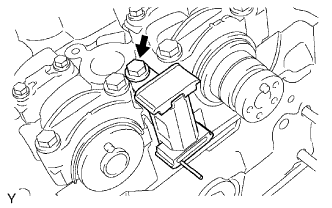 |
Remove the bolt and No. 2 chain tensioner.
| 42. REMOVE CAMSHAFT TIMING GEARS AND NO. 2 CHAIN (for Bank 2) |
 |
While raising the No. 3 chain tensioner, insert a pin of φ1.0 mm (0.0394 in.) into the hole to fix the tensioner in palace.
 |
Hold the hexagonal portion of the camshaft with a wrench, and remove the 2 bolts, camshaft timing gear, camshaft timing sprocket and No. 2 chain.
| 43. REMOVE NO. 3 CHAIN TENSIONER ASSEMBLY |
 |
Remove the bolt and No. 3 chain tensioner.
| 44. REMOVE NO. 1 CAMSHAFT AND NO. 2 CAMSHAFT (for Bank 1) |
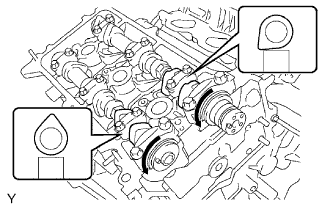 |
Remove the No. 1 and No. 2 camshafts.
Rotate the camshafts counterclockwise using a wrench so that the cam lobes of the No. 1 cylinder face each direction as shown in the illustration.
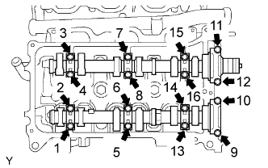 |
Uniformly loosen and remove the 16 bearing cap bolts in the sequence shown in the illustration.
Remove the 8 bearing caps and 2 camshafts.
| 45. REMOVE NO. 1 CAMSHAFT BEARING (for Bank 1) |
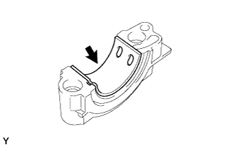 |
| 46. REMOVE NO. 2 CAMSHAFT BEARING (for Bank 1) |
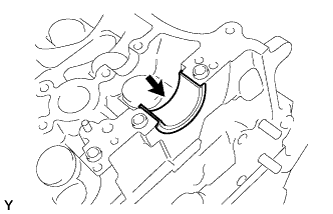 |
| 47. REMOVE NO. 3 CAMSHAFT AND NO. 4 CAMSHAFT (for Bank 2) |
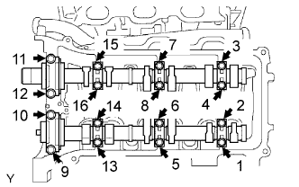 |
Remove the No. 3 and No. 4 camshafts.
Uniformly loosen and remove the 16 bearing cap bolts in the sequence shown in the illustration.
Remove the 8 bearing caps and 2 camshafts.
| 48. REMOVE CYLINDER HEADS |
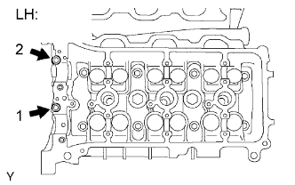 |
Using a 10 mm bi-hexagon wrench, uniformly loosen the 2 bolts in the sequence shown in the illustration. Remove the 2 cylinder head bolts and plate washers.
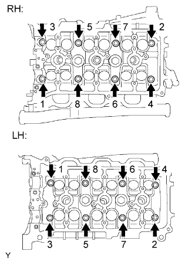 |
Using a 10 mm bi-hexagon wrench, uniformly loosen the 16 bolts in the sequence shown in the illustration. Remove the 16 cylinder head bolts and plate washers.
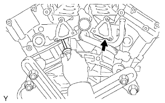 |
Lift the cylinder head from the dowels on the cylinder block, and place the 2 cylinder heads on wooden blocks on a bench.
| 49. REMOVE CYLINDER HEAD GASKET |
| 50. REMOVE NO. 2 CYLINDER HEAD GASKET |
| 51. REMOVE NO. 1 WATER OUTLET PIPE |
 |
Remove the 3 bolts and water outlet pipe.
| 52. REMOVE KNOCK SENSOR |
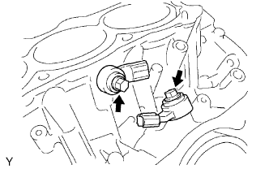 |
Remove the 2 bolts and 2 knock sensors.